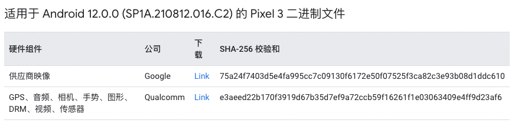

环境搭建
所有操作都是在root用户下，所以最好首先切换到root用户
更新
1
apt-get update
zsh
下载必备内容
1
apt-get install -y git vim wget curl python iftop
1
apt-get install -y git-core gnupg flex bison build-essential zip curl zlib1g-dev libc6-dev-i386 libncurses5 lib32ncurses5-dev x11proto-core-dev libx11-dev lib32z1-dev libgl1-mesa-dev libxml2-utils xsltproc unzip fontconfig
- 注意这里下载的默认python应该是python2，而目前的repo是依赖的python3
- iftop用于在aosp下载时查看网络情况，因为过程走的很慢
配置git
1
2
git config --global user.email "niklaus1996@icloud.com"
git config --global user.name "jiangker"
下载 repo
1
2
3
4
mkdir ~/bin && cd ~/bin
curl https://mirrors.tuna.tsinghua.edu.cn/git/git-repo -o repo
chmod +x repo
PATH=~/bin:$PATH
repo更新配置，因为我们用了zsh，所以
1
2
3
vim ~/.zshrc
# 增加
export REPO_URL='https://mirrors.tuna.tsinghua.edu.cn/git/git-repo'
AOSP下载
创建工作目录
1
mkdir ~/aosp && cd ~/aosp
初始化仓库
1
repo init -u https://mirrors.tuna.tsinghua.edu.cn/git/AOSP/platform/manifest
如果这里失败，提示语法错误，很可能就是python版本错误，可以直接修改repo默认的python版本为python3
初始化指定分支
1
repo init -u https://mirrors.tuna.tsinghua.edu.cn/git/AOSP/platform/manifest -b android-12.0.0_r34
开始同步
1
repo sync
参考
编译
1
2
3
4
5
# 导入构建脚本
source build/envsetup.sh
# 选择编译版本
lunch
make -j24
这里的lunch需要选择设备，参考选择设备 build，我这里是pixel3，所以是
1
lunch aosp_blueline-userdebug
参考
导入Android Studio
1
2
3
4
5
6
7
8
#用于初始化环境变量
source build/envsetup.sh
#生成文件out/host/linux-x86/framework/idegen.jar
mmm development/tools/idegen/
#源码根目录生成文件android.ipr(工程相关设置), android.iml(模块相关配置)
./development/tools/idegen/idegen.sh
Android Studio 导入工程时直接选择android.ipr
刷入pixel3
配置adb
这里默认已经下载过了Android Studio，所以系统中已经带有了Android Sdk相关内容了，我们只需要配置环境即可
直接在~/.zshrc添加
1
2
export ANDROID_HOME=/root/Android/Sdk
export PATH="$ANDROID_HOME/platform-tools:$PATH"
然后source ~/.zshrc
因为前面已经使用过了AS，所以默认device驱动已经添加上了，如果没有可以在/etc/udev/rules.d/71-android.rules里添加
输入命令可以看到，已经可以显示目前设备了
1
2
3
➜ ~ adb devices
List of devices attached
8B5X13Y0L device
下载所需二进制文件
在链接中找到对应的build id代号、标记和 build 号，这里可以看到android-12.0.0_r34对应的是SP1A.210812.016.C2
然后在Nexus 和 Pixel 设备的驱动程序二进制文件里直接搜索，下载对应pixel3的二进制文件

然后在根目录解压两个文件得到两个sh文件，执行sh文件，需要注意的是这里的sh文件都需要在最后输入I ACCEPT
刷入设备
如需刷写设备，请执行以下操作：
-
在启动时按住相应的组合键或使用以下命令使设备进入 fastboot 模式：
1
adb reboot bootloader
pixel3的组合键是先音量减然后再关机键，其它机型可以看启动进入 fastboot 模式
-
在设备处于 fastboot 模式后，运行以下命令：
1
fastboot flashall -w如果提示
fastboot: error: ANDROID_PRODUCT_OUT not set，可以选择配置一下，例如pixel3是blueline，所以输出的包是在out/target/product/blueline目录下，可以配置1
export ANDROID_PRODUCT_OUT=`pwd`/out/target/product/blueline